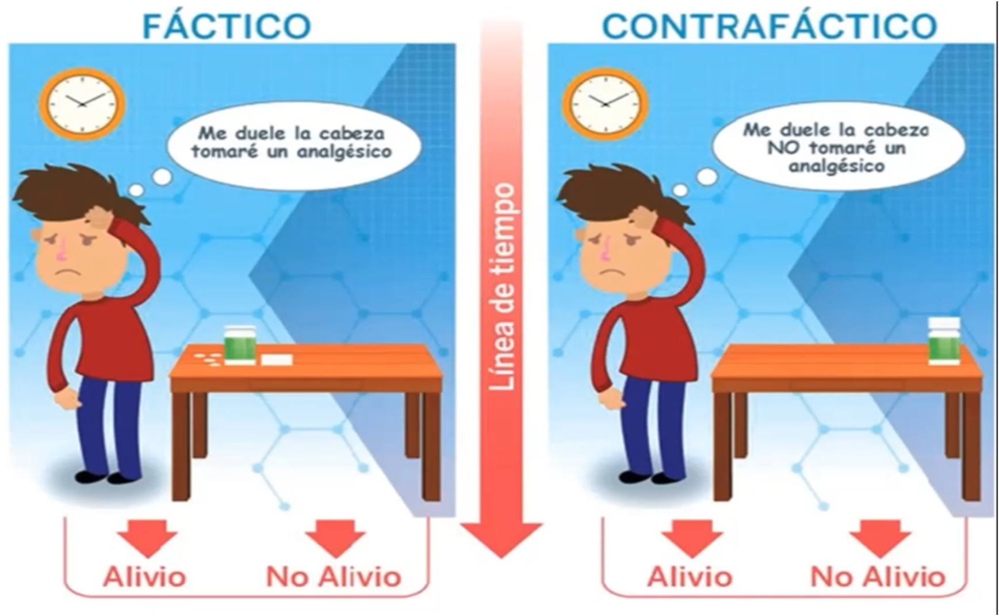
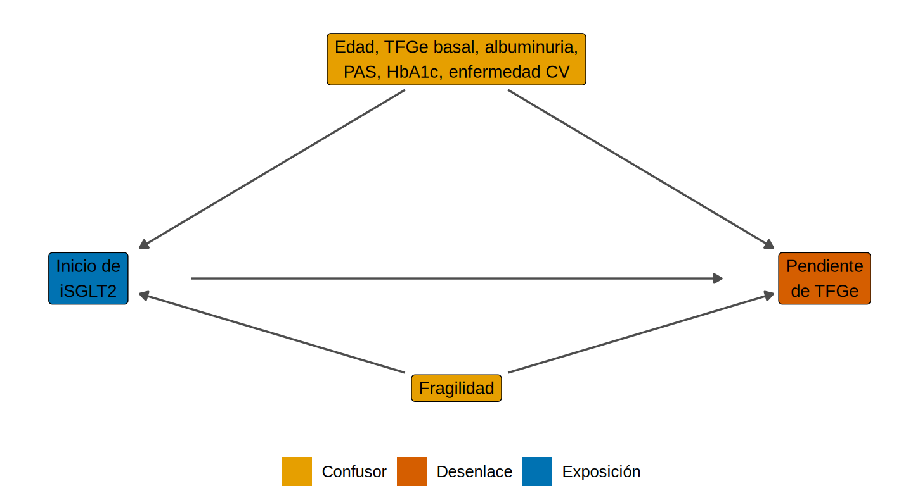
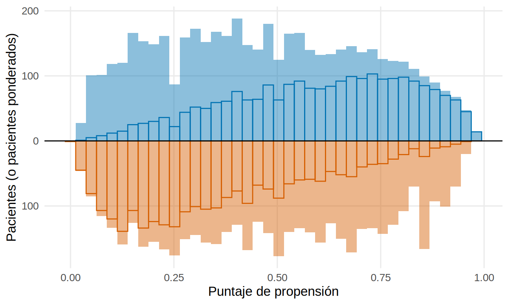
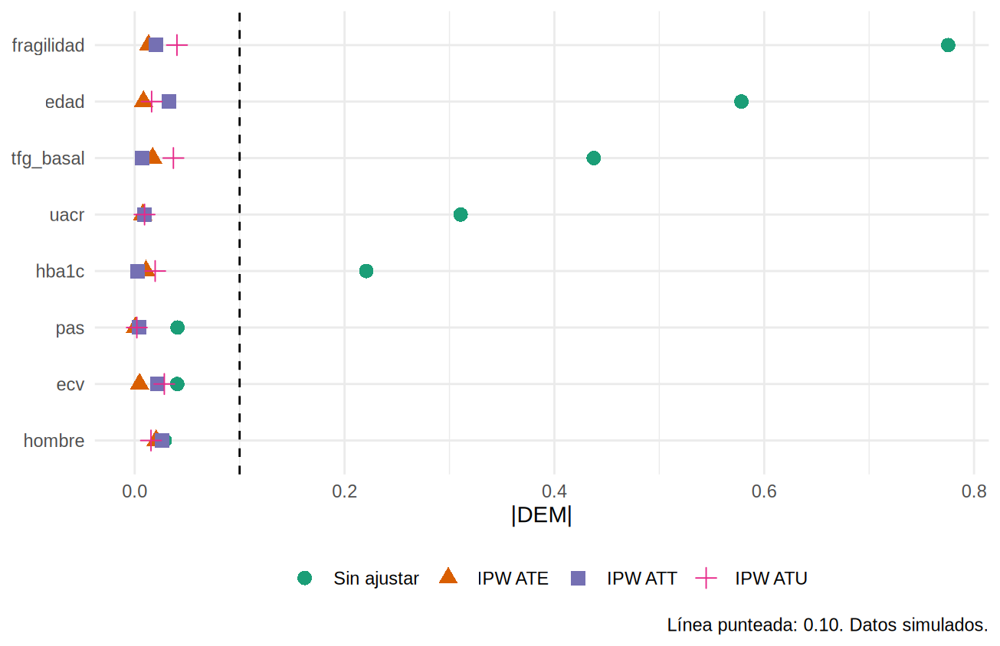
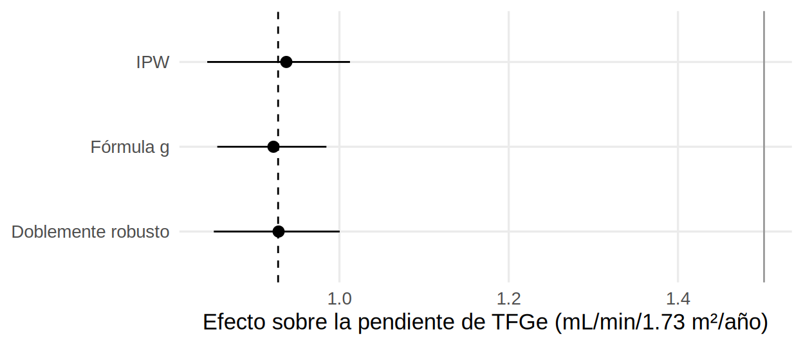
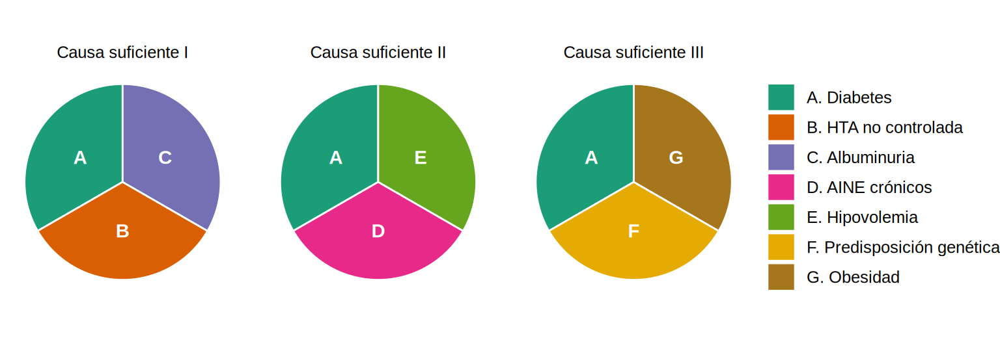

library(tidyverse)
library(marginaleffects)
source("R/funciones_epi.R") # dibujar_dag()
source("R/funciones_extra_a.R") # pct(), num()
theme_set(theme_minimal(base_size = 13) + theme(panel.grid.minor = element_blank()))Resultados potenciales y estimandos: ¿qué es un efecto causal?
Nota🩺 Escenario
Un paciente de 72 años con ERC y diabetes inicia un iSGLT2 y, un año después, su TFGe ha caído solo 0.5 mL/min/1.73 m². ¿El fármaco le ayudó? Para saberlo habría que verlo dos veces: una con el fármaco y otra, en el mismo momento y con la misma biología, sin él. Eso no es posible. Aun así, las decisiones clínicas son preguntas causales (¿este fármaco enlentece la progresión?), y los ensayos no siempre se pueden hacer. Este subcapítulo te da el lenguaje para definir con precisión qué efecto quieres estimar y cómo hacerlo con datos observacionales sin engañarte.
Lo que vamos a hacer
- Definir el efecto causal con resultados potenciales (el marco de Rubin) y sus tres estimandos: ATE, ATT y ATU.
- Ver por qué comparar tratados con no tratados está sesgado y qué supuestos permiten corregirlo.
- Estimar el efecto con ponderación por probabilidad inversa (IPW) y con estandarización (fórmula g), y compararlo con la verdad, porque los datos son simulados.
- Traducir cada estimando a una pregunta clínica, descomponer el sesgo de selección y recorrer lo que un análisis completo exige: pacientes “raros” y solapamiento, balance por estimando, incertidumbre (bootstrap) y doble robustez.
Paso 1. Dos mundos para cada paciente
Para cada paciente imaginamos dos resultados potenciales:
- \(Y^1\): lo que le ocurriría si recibe el tratamiento;
- \(Y^0\): lo que le ocurriría si no lo recibe.
El efecto causal individual es la diferencia, \(\delta_i = Y^1_i - Y^0_i\). El problema fundamental de la inferencia causal es que de cada paciente solo vemos uno de los dos mundos: el del tratamiento que realmente recibió.
knitr::include_graphics("fig/contrafactual.png")
Para fijar ideas, una viñeta de ocho pacientes con ERC y diabetes (hipotética). Conocemos, en esta tabla didáctica que no es observable en la vida real, su pendiente anual de TFGe con iSGLT2 (\(Y^1\)) y sin él (\(Y^0\)); más alto es mejor. La edad influye en el pronóstico y en quién recibe el fármaco: los más jóvenes lo reciben más.
vineta <- tribble(
~id, ~edad, ~tratado, ~y1, ~y0,
1, "Joven", 1, -0.5, -1.0,
2, "Joven", 1, -0.8, -1.2,
3, "Joven", 1, -0.7, -1.0,
4, "Joven", 0, -0.9, -1.1,
5, "Mayor", 1, -1.8, -3.5,
6, "Mayor", 0, -2.0, -3.0,
7, "Mayor", 0, -2.4, -3.6,
8, "Mayor", 0, -2.2, -3.3
) |>
mutate(ite = y1 - y0, # efecto individual (inobservable)
y = if_else(tratado == 1, y1, y0)) # lo que realmente observamos
vineta# A tibble: 8 × 7
id edad tratado y1 y0 ite y
<dbl> <chr> <dbl> <dbl> <dbl> <dbl> <dbl>
1 1 Joven 1 -0.5 -1 0.5 -0.5
2 2 Joven 1 -0.8 -1.2 0.4 -0.8
3 3 Joven 1 -0.7 -1 0.3 -0.7
4 4 Joven 0 -0.9 -1.1 0.2 -1.1
5 5 Mayor 1 -1.8 -3.5 1.7 -1.8
6 6 Mayor 0 -2 -3 1 -3
7 7 Mayor 0 -2.4 -3.6 1.2 -3.6
8 8 Mayor 0 -2.2 -3.3 1.1 -3.3La columna ite es el efecto individual y y lo que vemos en la vida real: solo uno de los dos mundos.
Paso 2. Efectos medios: ATE, ATT y ATU
Como los efectos individuales no se observan, los resumimos en grupos. Según a quién promediemos, hay tres efectos:
| Estimando | Significado | Fórmula | Pregunta clínica |
|---|---|---|---|
| ATE (efecto medio del tratamiento) | Efecto si toda la población recibiera tratamiento vs. ninguno | \(E[Y^1 - Y^0]\) | ¿Y si indicamos el fármaco a todos los pacientes elegibles? |
| ATT (efecto en los tratados) | Efecto en quienes sí lo recibieron | \(E[Y^1 - Y^0 \mid X=1]\) | ¿Qué ganaron los que lo toman? (¿y si lo retiramos?) |
| ATU (efecto en los no tratados) | Efecto en quienes no lo recibieron | \(E[Y^1 - Y^0 \mid X=0]\) | ¿Qué ganarían los que hoy no lo reciben si ampliamos la indicación? |
efectos_verdaderos <- vineta |>
summarise(
ATE = mean(ite),
ATT = mean(ite[tratado == 1]),
ATU = mean(ite[tratado == 0])
)
efectos_verdaderos# A tibble: 1 × 3
ATE ATT ATU
<dbl> <dbl> <dbl>
1 0.8 0.725 0.875El ATE es 0.80, el ATT 0.72 y el ATU 0.88 mL/min/1.73 m²/año. El ATE es el promedio ponderado de los otros dos:
\[ \text{ATE} = \pi_{\text{tratados}} \times \text{ATT} + \pi_{\text{no tratados}} \times \text{ATU} \]
Advertencia⚠️ ¿Qué estimando necesita tu pregunta?
Un comité de farmacia que decide cubrir un fármaco para todos los elegibles necesita el ATE. Un servicio que se pregunta qué ocurriría si retira el fármaco a quienes ya lo reciben necesita el ATT. Uno que quiere ampliar la indicación a quienes hoy no lo reciben necesita el ATU. Pueden ser distintos cuando el efecto varía entre pacientes (heterogeneidad). Define primero tu estimando; después elige el método.
Paso 3. Por qué la comparación directa engaña: el sesgo de selección
En la vida real solo conocemos y. La comparación “natural” es la diferencia de medias observadas:
ingenuo <- vineta |>
group_by(tratado) |>
summarise(media_y = mean(y)) |>
summarise(dif_ingenua = media_y[tratado == 1] - media_y[tratado == 0])
ingenuo# A tibble: 1 × 1
dif_ingenua
<dbl>
1 1.8La diferencia ingenua es 1.8, más del doble del ATE verdadero (0.8). ¿Por qué? La diferencia observada se descompone en dos partes:
\[ \underbrace{E[Y \mid X=1] - E[Y \mid X=0]}_{\text{diferencia observada}} = \underbrace{E[Y^1 - Y^0 \mid X=1]}_{\text{ATT}} + \underbrace{E[Y^0 \mid X=1] - E[Y^0 \mid X=0]}_{\text{sesgo de selección}} \]
El sesgo de selección compara cómo evolucionarían sin tratamiento los que recibieron el fármaco frente a los que no. Si los tratados son más jóvenes y de mejor pronóstico, su \(Y^0\) ya sería mejor aunque nunca hubieran recibido nada:
vineta |>
summarise(
diferencia_observada = mean(y[tratado == 1]) - mean(y[tratado == 0]),
ATT = mean(ite[tratado == 1]),
sesgo_de_seleccion = mean(y0[tratado == 1]) - mean(y0[tratado == 0])
) |>
mutate(suma_ATT_mas_sesgo = ATT + sesgo_de_seleccion)# A tibble: 1 × 4
diferencia_observada ATT sesgo_de_seleccion suma_ATT_mas_sesgo
<dbl> <dbl> <dbl> <dbl>
1 1.8 0.725 1.08 1.8La idea central: comparar tratados con no tratados mezcla el efecto del tratamiento con las diferencias previas entre los grupos. Todo el trabajo de la inferencia causal consiste en eliminar la segunda parte. (Y, como dice el autor, no solo hace falta una máquina del tiempo para ver los dos mundos: también una que lea la mente, para saber por qué cada paciente recibió el tratamiento.)
Una solución sencilla: estratificar
Aquí la edad es la causa común del tratamiento y del desenlace. Podemos comparar dentro de cada grupo de edad y luego promediar:
estratos <- vineta |>
group_by(edad) |>
summarise(
n = n(),
efecto_estrato = mean(y[tratado == 1]) - mean(y[tratado == 0])
) |>
mutate(peso = n / sum(n))
estratos# A tibble: 2 × 4
edad n efecto_estrato peso
<chr> <int> <dbl> <dbl>
1 Joven 4 0.433 0.5
2 Mayor 4 1.5 0.5ate_estratificado <- sum(estratos$peso * estratos$efecto_estrato)
ate_estratificado[1] 0.9666667El estimado estratificado (0.97) se acerca mucho más al ATE verdadero que la diferencia ingenua; no es exacto porque solo tenemos 8 pacientes. Con muchos confusores continuos la estratificación no es práctica: usaremos ponderación y estandarización.
Paso 4. Los tres supuestos de identificación
Para que un análisis de datos observacionales estime un efecto causal necesitamos tres supuestos. No se pueden comprobar con los datos: se defienden con conocimiento clínico.
| Supuesto | En palabras | Pregunta de control | Ejemplo en nefrología |
|---|---|---|---|
| Consistencia | El “tratamiento” está bien definido y el resultado de un paciente no depende del tratamiento de otros | ¿“iSGLT2” es el mismo tratamiento para todos? ¿Qué fármaco, dosis, adherencia? | “Inicio de dapagliflozina 10 mg” es definible; “uso de iSGLT2” es ambiguo |
| Intercambiabilidad (sin confusión no medida) | Tratados y no tratados serían comparables si tuvieran las mismas covariables | ¿Medí todo lo que influye a la vez en tratar y en el desenlace? | ¿Medí fragilidad, adherencia, motivación? |
| Positividad | Todo tipo de paciente tiene probabilidad > 0 de recibir cada opción | ¿Hay pacientes similares a los tratados que no recibieron el fármaco, y viceversa? | Si nunca se inicia con TFGe < 20, no hay tratados en ese rango: no hay comparación posible |
- Consistencia tiene dos partes: una versión bien definida del tratamiento y ausencia de interferencia (el tratamiento de un paciente no cambia el resultado de otro; rara en nefrología, pero posible, por ejemplo, con prácticas de una unidad de diálisis que se contagian).
- Intercambiabilidad incluye la versión condicional: tratados y no tratados son intercambiables dentro de cada nivel de las covariables medidas. No implica que ATT, ATU y ATE coincidan.
- Positividad sí se puede revisar (¿hay solapamiento de puntajes de propensión?); su fracaso se ve en pesos extremos.
El autor resume en una tabla qué tan “garantizados” quedan estos supuestos según el tipo de estudio (adaptada de su material; 😄 = casi garantizado por el diseño, 🤷 = hay que argumentarlo):
| Supuesto | Ensayo aleatorizado ideal | Ensayo aleatorizado realista | Estudio observacional |
|---|---|---|---|
| Consistencia (exposición bien definida) | 😄 | 😄 | 🤷 |
| Consistencia (sin interferencia) | 🤷 | 🤷 | 🤷 |
| Positividad | 😄 | 😄 | 🤷 |
| Intercambiabilidad | 😄 | 🤷 | 🤷 |
La aleatorización logra la intercambiabilidad (en promedio los grupos son iguales, incluso en lo no medido) y la positividad (la probabilidad de asignación es conocida), y facilita la consistencia (el investigador define la intervención). Pero no basta con aleatorizar: el abandono diferencial, la mala adherencia y la ausencia de cegamiento pueden romper esos supuestos (Capítulo 3.1).
Cuando no podemos aleatorizar: emular un ensayo
Una buena práctica es especificar el ensayo que haríamos si pudiéramos y luego emularlo con los datos observacionales (target trial emulation):
| Elemento | Ensayo ideal | Emulación con datos observacionales |
|---|---|---|
| Elegibilidad | ERC G3-G4, DM2, sin diálisis | Mismos criterios aplicados en el momento cero |
| Estrategias | Iniciar iSGLT2 vs. no iniciar | Quienes inician vs. no inician en el periodo de enrolamiento |
| Asignación | Aleatoria | Depende de las covariables: se corrige con ponderación o estandarización |
| Inicio del seguimiento | Al aleatorizar | Al cumplir la elegibilidad y recibir (o no) el tratamiento (evita el sesgo de tiempo inmortal) |
| Desenlace | Pendiente de TFGe a 1 año; evento renal a 3 años | Igual, definido igual en todos |
| Contraste causal | Efecto de la asignación (ITT) y/o del tratamiento recibido (PP) | Igual; aclarar cuál |
| Análisis | Comparación ITT | Ajuste por confusores del DAG, con análisis de sensibilidad |
Antes de abrir R, completa esta tabla para tu pregunta: si no puedes llenar una fila (por ejemplo, el “momento cero”), tu pregunta todavía no está bien formulada.
Paso 5. Un ejemplo con datos simulados
Ahora trabajamos con un registro simulado de 5000 adultos con ERC y diabetes tipo 2. Pregunta causal: ¿iniciar un iSGLT2 modifica la pendiente anual de la TFGe, comparado con no iniciarlo? Cargamos la versión oráculo, que incluye lo que nunca tendríamos en la vida real: los resultados potenciales de cada paciente.
oraculo <- read_csv("Bases/ckd_isglt2_oraculo.csv", show_col_types = FALSE)
glimpse(oraculo)Rows: 5,000
Columns: 18
$ id <dbl> 1, 2, 3, 4, 5, 6, 7, 8, 9, 10, 11, 12, 13, 14, 15, 16, 1…
$ edad <dbl> 70, 64, 72, 77, 68, 62, 68, 63, 61, 71, 60, 46, 60, 72, …
$ sexo <chr> "Mujer", "Mujer", "Mujer", "Mujer", "Hombre", "Mujer", "…
$ hba1c <dbl> 7.5, 9.6, 9.1, 7.2, 6.0, 9.2, 6.0, 6.7, 7.4, 9.1, 8.7, 6…
$ pas <dbl> 130, 146, 136, 144, 134, 110, 134, 151, 130, 144, 136, 1…
$ tfg_basal <dbl> 47.9, 42.0, 35.1, 34.5, 46.4, 47.1, 44.6, 45.2, 46.4, 34…
$ uacr <dbl> 77, 70, 230, 162, 379, 182, 36, 62, 40, 181, 218, 45, 10…
$ ecv <dbl> 0, 0, 0, 0, 0, 0, 0, 0, 0, 0, 1, 0, 1, 0, 1, 0, 0, 0, 0,…
$ isglt2 <dbl> 1, 0, 0, 0, 0, 0, 0, 0, 1, 1, 0, 1, 0, 0, 0, 1, 1, 1, 1,…
$ pendiente_tfg <dbl> -0.07, -2.38, -6.47, -2.04, -1.13, -1.58, -3.36, -3.95, …
$ tiempo_meses <dbl> 27.0, 36.0, 5.2, 36.0, 36.0, 36.0, 36.0, 36.0, 36.0, 36.…
$ evento <dbl> 1, 0, 1, 0, 0, 0, 0, 0, 0, 0, 0, 0, 1, 0, 1, 0, 0, 0, 0,…
$ fragilidad <dbl> 1.64, 0.38, 1.14, 1.41, -0.34, -0.78, 0.77, 0.11, -1.38,…
$ pendiente_0 <dbl> -0.75, -2.38, -6.47, -2.04, -1.13, -1.58, -3.36, -3.95, …
$ pendiente_1 <dbl> -0.07, -1.66, -5.53, -1.23, 0.13, -0.51, -3.36, -3.70, -…
$ ite <dbl> 0.68, 0.72, 0.94, 0.81, 1.27, 1.07, 0.00, 0.25, 0.16, 1.…
$ evento_36m_0 <dbl> 1, 0, 1, 0, 0, 0, 0, 0, 0, 0, 0, 0, 1, 0, 1, 0, 0, 0, 0,…
$ evento_36m_1 <dbl> 1, 0, 1, 0, 0, 0, 0, 0, 0, 0, 0, 0, 1, 0, 1, 0, 0, 0, 0,…| Variable | Descripción |
|---|---|
isglt2 |
Tratamiento: inició iSGLT2 (1) o no (0) |
pendiente_tfg |
Desenlace: cambio anual de TFGe (mL/min/1.73 m²/año); más alto = mejor |
edad, sexo, hba1c, pas, tfg_basal, uacr, ecv |
Covariables clínicas medidas |
fragilidad |
Fragilidad (en la vida real, por ejemplo, la Clinical Frailty Scale). En este subcapítulo la suponemos medida. |
pendiente_0, pendiente_1, ite |
Oráculo: resultados potenciales y efecto individual |
nodos <- tribble(
~nombre, ~x, ~y, ~etiqueta, ~rol,
"X", 1, 1, "Inicio de\niSGLT2", "exposicion",
"Y", 5, 1, "Pendiente\nde TFGe", "desenlace",
"C", 3, 2.6, "Edad, TFGe basal, albuminuria,\nPAS, HbA1c, enfermedad CV", "confusor",
"F", 3, 0.2, "Fragilidad", "confusor"
)
aristas <- tribble(
~de, ~a,
"X", "Y",
"C", "X", "C", "Y",
"F", "X", "F", "Y"
)
dibujar_dag(nodos, aristas)
Los valores verdaderos (solo posibles porque simulamos)
verdad <- oraculo |>
summarise(
ATE = mean(ite),
ATT = mean(ite[isglt2 == 1]),
ATU = mean(ite[isglt2 == 0])
)
verdad# A tibble: 1 × 3
ATE ATT ATU
<dbl> <dbl> <dbl>
1 0.928 1.06 0.810Con iSGLT2 la pérdida de TFGe se enlentece, en promedio, 0.93 mL/min/1.73 m²/año en toda la población. Como el efecto es mayor con más albuminuria y quienes la tienen reciben el fármaco con más frecuencia, el ATT (1.06) supera al ATU (0.81).
La estimación ingenua
ingenuo_ckd <- oraculo |>
group_by(isglt2) |>
summarise(media = mean(pendiente_tfg)) |>
summarise(dif = media[isglt2 == 1] - media[isglt2 == 0])
ingenuo_ckd# A tibble: 1 × 1
dif
<dbl>
1 1.50La diferencia cruda es 1.50: sobrestima el efecto en 62 %. Los pacientes que reciben iSGLT2 son más jóvenes, menos frágiles y con mejor TFGe: ya habrían evolucionado mejor aunque no recibieran el fármaco.
Paso 6. Ponderación por probabilidad inversa (IPW)
Idea. Usar los confusores para predecir la probabilidad de recibir el tratamiento (el puntaje de propensión, PS) y ponderar a cada paciente para construir una pseudo-población en la que los confusores ya no se relacionan con el tratamiento, como en un ensayo.
6a. Modelo del puntaje de propensión.
modelo_ps <- glm(
isglt2 ~ edad + sexo + hba1c + pas + tfg_basal + log(uacr) + ecv + fragilidad,
data = oraculo, family = binomial()
)
oraculo <- oraculo |> mutate(ps = fitted(modelo_ps))
summary(oraculo$ps) Min. 1st Qu. Median Mean 3rd Qu. Max.
0.01208 0.25616 0.46421 0.47000 0.67781 0.99360 6b. Pesos según el estimando. Con \(p_i\) el PS de cada paciente:
| Estimando | Peso de los tratados | Peso de los no tratados |
|---|---|---|
| ATE | \(1/p_i\) | \(1/(1-p_i)\) |
| ATT | 1 | \(p_i/(1-p_i)\) |
| ATU | \((1-p_i)/p_i\) | 1 |
oraculo <- oraculo |>
mutate(
w_ate = isglt2 / ps + (1 - isglt2) / (1 - ps),
w_att = isglt2 + (1 - isglt2) * ps / (1 - ps),
w_atu = (1 - isglt2) + isglt2 * (1 - ps) / ps
)
oraculo |> summarise(across(c(w_ate, w_att, w_atu), list(min = min, mediana = median, max = max)))# A tibble: 1 × 9
w_ate_min w_ate_mediana w_ate_max w_att_min w_att_mediana w_att_max w_atu_min
<dbl> <dbl> <dbl> <dbl> <dbl> <dbl> <dbl>
1 1.01 1.52 27.4 0.0122 1 19.1 0.00644
# ℹ 2 more variables: w_atu_mediana <dbl>, w_atu_max <dbl>
Tip💡 ¿Por qué “inversa”?
Un paciente con alta probabilidad de recibir el fármaco que sí lo recibe es lo esperado y pesa poco. Uno con baja probabilidad que sí lo recibe es “raro”: representa a muchos pacientes parecidos que no lo recibieron, y por eso pesa más. Los pesos muy grandes (aquí, hasta 27.4) señalan problemas de positividad y desestabilizan la estimación.
Con el paquete WeightIt y propensity (no se ejecuta aquí). Estos paquetes hacen los mismos pasos (modelo, pesos y diagnóstico) en pocas líneas; ATC es el nombre que usa WeightIt para el ATU:
library(WeightIt)
w <- weightit(isglt2 ~ edad + sexo + hba1c + pas + tfg_basal + log(uacr) + ecv + fragilidad,
data = oraculo, method = "glm", estimand = "ATE") # también "ATT" y "ATC" (= ATU)
summary(w) # pesos extremos y tamaño efectivo
lm(pendiente_tfg ~ isglt2, data = oraculo, weights = w$weights)
# Estilo del autor, con {broom} y {propensity}
library(broom); library(propensity)
oraculo_wts <- glm(isglt2 ~ edad + sexo + hba1c + pas + tfg_basal + log(uacr) + ecv + fragilidad,
data = oraculo, family = binomial()) |>
augment(newdata = oraculo, type.predict = "response") |> # .fitted = puntaje de propensión
mutate(wts = wt_ate(.fitted, isglt2))6c. Diagnóstico visual. La figura muestra cómo el ponderar equilibra la distribución del PS entre grupos:
ggplot(oraculo, aes(x = ps)) +
# pseudo-población ponderada (relleno)
geom_histogram(data = filter(oraculo, isglt2 == 1), aes(weight = w_ate, y = after_stat(count)),
bins = 40, fill = "#0072B2", alpha = 0.45) +
geom_histogram(data = filter(oraculo, isglt2 == 0), aes(weight = w_ate, y = -after_stat(count)),
bins = 40, fill = "#D55E00", alpha = 0.45) +
# población original (contorno)
geom_histogram(data = filter(oraculo, isglt2 == 1), aes(y = after_stat(count)),
bins = 40, fill = NA, color = "#0072B2") +
geom_histogram(data = filter(oraculo, isglt2 == 0), aes(y = -after_stat(count)),
bins = 40, fill = NA, color = "#D55E00") +
geom_hline(yintercept = 0) +
scale_y_continuous(labels = abs) +
labs(x = "Puntaje de propensión", y = "Pacientes (o pacientes ponderados)")
Equivalente con {halfmoon} (no se ejecuta aquí): geom_mirror_histogram() dibuja los histogramas espejo en dos líneas.
6d. Modelo del desenlace ponderado. El coeficiente del tratamiento es el estimador:
estima_ipw <- function(datos, peso) {
coef(lm(pendiente_tfg ~ isglt2, data = datos, weights = datos[[peso]]))[["isglt2"]]
}
ipw <- tibble(
estimando = c("ATE", "ATT", "ATU"),
verdadero = c(verdad$ATE, verdad$ATT, verdad$ATU),
ipw = c(estima_ipw(oraculo, "w_ate"), estima_ipw(oraculo, "w_att"),
estima_ipw(oraculo, "w_atu"))
)
ipw# A tibble: 3 × 3
estimando verdadero ipw
<chr> <dbl> <dbl>
1 ATE 0.928 0.937
2 ATT 1.06 1.00
3 ATU 0.810 0.878Paso 7. Estandarización (fórmula g)
Otra forma de pensarlo, más cercana a los resultados potenciales: ajustar un modelo del desenlace con el tratamiento y los confusores, y luego predecir para cada paciente qué ocurriría si todos recibieran el fármaco y si ninguno lo recibiera.
- Ajustar un modelo del desenlace con tratamiento, confusores e interacciones.
- Predecir el desenlace de cada paciente poniendo
isglt2 = 1. - Predecir el desenlace de cada paciente poniendo
isglt2 = 0. - Promediar la diferencia: en toda la población (ATE), solo en los tratados (ATT) o solo en los no tratados (ATU).
modelo_resultado <- lm(
pendiente_tfg ~ isglt2 * (edad + sexo + hba1c + pas + tfg_basal + log(uacr) + ecv + fragilidad),
data = oraculo
)
estandarizar <- function(modelo, datos) {
mean(predict(modelo, mutate(datos, isglt2 = 1)) - predict(modelo, mutate(datos, isglt2 = 0)))
}
gformula <- tibble(
estimando = c("ATE", "ATT", "ATU"),
gformula = c(estandarizar(modelo_resultado, oraculo),
estandarizar(modelo_resultado, filter(oraculo, isglt2 == 1)),
estandarizar(modelo_resultado, filter(oraculo, isglt2 == 0)))
)
gformula# A tibble: 3 × 2
estimando gformula
<chr> <dbl>
1 ATE 0.922
2 ATT 1.03
3 ATU 0.822El paquete {marginaleffects} hace lo mismo en una sola línea (y calcula el error estándar):
avg_comparisons(modelo_resultado, variables = "isglt2") # ATE
Term Contrast Estimate Std. Error z Pr(>|z|) S 2.5 % 97.5 %
isglt2 1 - 0 0.922 0.0332 27.8 <0.001 560.6 0.857 0.987
Columns: term, contrast, estimate, std.error, statistic, p.value, s.value, conf.low, conf.high
Type: response avg_comparisons(modelo_resultado, variables = "isglt2", newdata = filter(oraculo, isglt2 == 1)) # ATT
Term Contrast Estimate Std. Error z Pr(>|z|) S 2.5 % 97.5 %
isglt2 1 - 0 1.03 0.0365 28.3 <0.001 584.5 0.963 1.11
Columns: term, contrast, estimate, std.error, statistic, p.value, s.value, conf.low, conf.high
Type: response Paso 8. Comparación con la verdad
resumen <- ipw |>
left_join(gformula, by = "estimando") |>
mutate(across(where(is.numeric), \(x) round(x, 2)))
resumen# A tibble: 3 × 4
estimando verdadero ipw gformula
<chr> <dbl> <dbl> <dbl>
1 ATE 0.93 0.94 0.92
2 ATT 1.06 1 1.03
3 ATU 0.81 0.88 0.82Los dos métodos recuperan el ATE verdadero (0.93) con muy buena aproximación (IPW 0.94; fórmula g 0.92), porque medimos y ajustamos todos los confusores (incluida la fragilidad). Para el ATT y el ATU, la estandarización queda algo más cerca de la verdad que el IPW, que es más sensible a los pesos grandes. En el Capítulo 3.4 veremos qué pasa cuando un confusor no se mide.
Un análisis causal completo, estimando por estimando
Hasta aquí calculaste ATE, ATT y ATU con dos métodos. Esta sección añade lo que suele faltar para entender los estimandos y para creer una estimación: traducirlos a preguntas clínicas, ver de dónde sale el sesgo de selección, identificar a los pacientes “raros” y cuantificar la incertidumbre. La idea de partir de los estimandos como preguntas de política sigue el enfoque de Greifer y Stuart (2021), que también explica Andrew Heiss en su artículo sobre ATE, ATT y ATU (lectura recomendada por el autor).
Paso 9. Cada estimando es una pregunta clínica distinta
Antes de calcular, pregunta qué decisión quieres informar:
| Estimando | Pregunta en lenguaje clínico | Decisión que informa |
|---|---|---|
| ATE | ¿Cuánto cambiaría la pendiente si todos los pacientes del registro iniciaran iSGLT2 en lugar de ninguno? | Cobertura universal |
| ATT | ¿Cuánto perderían quienes hoy lo reciben si se les retirara? | Evaluar el programa actual o retirar el fármaco |
| ATU | ¿Cuánto ganarían quienes hoy no lo reciben si se ampliara la indicación? | Ampliar la indicación |
Dos relaciones sencillas, que con el oráculo podemos comprobar:
- El ATE es el promedio ponderado de los otros dos: \(\text{ATE} = \pi_T \cdot \text{ATT} + (1-\pi_T) \cdot \text{ATU}\), con \(\pi_T\) la proporción de tratados.
- La diferencia cruda no es el ATT: es el ATT más el sesgo de selección, es decir, cuánto mejor (o peor) habrían evolucionado los tratados sin tratamiento, comparados con los no tratados.
pi_t <- mean(oraculo$isglt2)
descomp <- oraculo |>
summarise(
ATE_directo = mean(ite),
ATE_ponderado = pi_t * mean(ite[isglt2 == 1]) + (1 - pi_t) * mean(ite[isglt2 == 0]),
dif_cruda = mean(pendiente_tfg[isglt2 == 1]) - mean(pendiente_tfg[isglt2 == 0]),
ATT = mean(ite[isglt2 == 1]),
sesgo_seleccion = mean(pendiente_0[isglt2 == 1]) - mean(pendiente_0[isglt2 == 0])
) |>
mutate(ATT_mas_sesgo = ATT + sesgo_seleccion)
descomp# A tibble: 1 × 6
ATE_directo ATE_ponderado dif_cruda ATT sesgo_seleccion ATT_mas_sesgo
<dbl> <dbl> <dbl> <dbl> <dbl> <dbl>
1 0.928 0.928 1.50 1.06 0.442 1.50Qué vemos: el ATE calculado de las dos maneras coincide (0.93 y 0.93), y la diferencia cruda (1.50) es exactamente el ATT (1.06) más un sesgo de selección de 0.44: sin tratamiento, los pacientes que hoy reciben el fármaco ya perderían menos TFGe por año que los demás (más jóvenes, menos frágiles, mejor TFGe basal). Eso es lo que corrigen IPW y la estandarización. Con datos reales nunca puedes calcular este sesgo, solo argumentarlo con tu DAG.
Paso 10. Pacientes “raros” y solapamiento
El IPW da más peso a los pacientes inesperados: tratados con poca probabilidad de serlo y no tratados con mucha probabilidad de recibir el fármaco. Mirarlos de cerca sirve para detectar problemas de positividad y para entender de qué pacientes depende tu estimación.
raros <- oraculo |>
mutate(grupo = case_when(
isglt2 == 1 & ps < 0.20 ~ "Tratados con PS < 0.20",
isglt2 == 0 & ps > 0.80 ~ "No tratados con PS > 0.80",
TRUE ~ "Resto"
))
raros_tab <- raros |>
group_by(grupo) |>
summarise(
n = n(),
peso_ate_medio = mean(w_ate), peso_ate_max = max(w_ate),
edad = mean(edad), tfg_basal = mean(tfg_basal), fragilidad = mean(fragilidad)
)
raros_tab |> mutate(across(where(is.numeric), \(x) round(x, 2)))# A tibble: 3 × 7
grupo n peso_ate_medio peso_ate_max edad tfg_basal fragilidad
<chr> <dbl> <dbl> <dbl> <dbl> <dbl> <dbl>
1 No tratados con … 79 7.71 20.1 56.1 52.9 -1.32
2 Resto 4815 1.77 5 63.8 46.0 -0.03
3 Tratados con PS … 106 8.06 27.4 70.9 40.9 0.94Qué vemos: los 106 tratados con PS < 0.20 son mayores (71 años en promedio), con peor TFGe y más frágiles; los 79 no tratados con PS > 0.80 son más jóvenes y con mejor TFGe. Cada uno pesa en promedio ≈ 8 (frente a 1.8 del resto de pacientes), con pesos de hasta 27: pocos pacientes sostienen buena parte de la estimación.
tam_efectivo <- oraculo |>
group_by(isglt2) |>
summarise(n = n(), ps_p1 = quantile(ps, 0.01), ps_p99 = quantile(ps, 0.99),
ess_ate = sum(w_ate)^2 / sum(w_ate^2), # tamaño de muestra efectivo de Kish
ess_att = sum(w_att)^2 / sum(w_att^2))
tam_efectivo |> mutate(across(where(is.numeric), \(x) round(x, 2)))# A tibble: 2 × 6
isglt2 n ps_p1 ps_p99 ess_ate ess_att
<dbl> <dbl> <dbl> <dbl> <dbl> <dbl>
1 0 2650 0.03 0.87 1755. 803.
2 1 2350 0.11 0.96 1408. 2350 El tamaño de muestra efectivo (Kish) dice cuántos pacientes “valen” tras ponderar. Con los pesos del ATE los no tratados pasan de 2650 a ≈ 1755 y los tratados de 2350 a ≈ 1408: perdemos precisión, pero ningún grupo queda sin pacientes comparables. Con los pesos del ATT, en cambio, los no tratados (que deben parecerse a los tratados) quedan en ≈ 803: estimar el ATT exige más de ese grupo. Si los pesos se disparan (p. ej., > 10), revisa el modelo del PS, recorta el PS (p. ej., conserva 0.05-0.95, lo que cambia el estimando a esa población) o trunca los pesos; en cualquier caso, informa la decisión y repite el análisis sin ella.
Hay un cuarto estimando, el de la población de solapamiento (ATO), que pondera por \(p_i(1-p_i)\) y da más peso a los pacientes con probabilidad intermedia de tratarse, exactamente aquellos para los que la pregunta “¿tratar o no?” es genuinamente dudosa. Es el más estable (casi no tiene pesos extremos) pero responde a una población definida por los datos:
oraculo <- oraculo |> mutate(w_ato = isglt2 * (1 - ps) + (1 - isglt2) * ps)
tibble(
estimando = "ATO",
verdadero = weighted.mean(oraculo$ite, oraculo$ps * (1 - oraculo$ps)), # promedio del efecto individual con pesos p(1-p)
ipw = estima_ipw(oraculo, "w_ato"),
peso_max = max(oraculo$w_ato)
) |> mutate(across(where(is.numeric), \(x) round(x, 2)))# A tibble: 1 × 4
estimando verdadero ipw peso_max
<chr> <dbl> <dbl> <dbl>
1 ATO 0.94 0.93 0.96Paso 11. Balance: para cada estimando, una pseudo-población distinta
Cada conjunto de pesos construye una población diferente, y en cada una los grupos deben quedar equilibrados. Reutilizamos la función love_plot() del libro con los tres pesos:
vars_bal <- c("edad", "hombre", "hba1c", "pas", "tfg_basal", "uacr", "ecv", "fragilidad")
oraculo <- oraculo |> mutate(hombre = as.numeric(sexo == "Hombre"))
love_plot(oraculo, vars_bal,
pesos = list(`IPW ATE` = oraculo$w_ate, `IPW ATT` = oraculo$w_att, `IPW ATU` = oraculo$w_atu))
Antes de ponderar, la |DEM| máxima es 0.78; con cada conjunto de pesos baja a 0.02 (ATE), 0.033 (ATT) y 0.04 (ATU). Con el paquete cobalt (código no verificado en el entorno de pruebas del libro) el mismo gráfico sale en dos líneas:
library(cobalt)
love.plot(isglt2 ~ edad + sexo + hba1c + pas + tfg_basal + uacr + ecv + fragilidad,
data = oraculo, weights = oraculo$w_ate, thresholds = c(m = 0.1), abs = TRUE)El balance se decide sin mirar el desenlace, y demuestra equilibrio en lo medido; nada dice de lo no medido (lo que viste con la fragilidad en el Capítulo 3.4).
Paso 12. Incertidumbre: el bootstrap
Una estimación sin intervalo es una anécdota. El problema del IPW y de la fórmula g es que el error estándar de lm() ignora que el PS (o el modelo) se estimó. La solución general y fácil de entender es el bootstrap: remuestrear pacientes con reemplazo, repetir todo el análisis (incluido el modelo del PS) y mirar cuánto varía el resultado.
Primero empaquetamos el análisis en una función que devuelve las tres estimaciones (aquí también la doblemente robusta, que veremos en el Paso 13):
f_ps <- isglt2 ~ edad + sexo + hba1c + pas + tfg_basal + log(uacr) + ecv + fragilidad
f_res <- pendiente_tfg ~ isglt2 * (edad + sexo + hba1c + pas + tfg_basal + log(uacr) + ecv + fragilidad)
analisis_completo <- function(d, f_ps, f_res) {
d$ps <- fitted(glm(f_ps, data = d, family = binomial())) # 1. puntaje de propensión
d$w <- d$isglt2 / d$ps + (1 - d$isglt2) / (1 - d$ps) # 2. pesos del ATE
mod <- lm(f_res, data = d) # 3. modelo del desenlace
m1 <- predict(mod, mutate(d, isglt2 = 1)) # predicción si todos tratados
m0 <- predict(mod, mutate(d, isglt2 = 0)) # predicción si ninguno
c(
ipw = coef(lm(pendiente_tfg ~ isglt2, data = d, weights = w))[["isglt2"]],
formula_g = mean(m1 - m0),
doble_rob = mean(m1 - m0 + d$isglt2 * (d$pendiente_tfg - m1) / d$ps -
(1 - d$isglt2) * (d$pendiente_tfg - m0) / (1 - d$ps))
)
}
estimacion <- analisis_completo(oraculo, f_ps, f_res)
estimacion ipw formula_g doble_rob
0.9372352 0.9220645 0.9281102 Ahora repetimos el análisis en 300 remuestras (suficiente para ilustrar; en un artículo usa ≥ 1000):
set.seed(2025)
remuestras <- map(1:300, \(i) analisis_completo(slice_sample(oraculo, prop = 1, replace = TRUE), f_ps, f_res)) |>
bind_rows()
ic_boot <- remuestras |>
pivot_longer(everything(), names_to = "metodo", values_to = "est") |>
group_by(metodo) |>
summarise(ee = sd(est), inf = quantile(est, 0.025), sup = quantile(est, 0.975)) |>
mutate(estimacion = estimacion[metodo], verdad = verdad$ATE, .after = metodo)
ic_boot# A tibble: 3 × 6
metodo estimacion verdad ee inf sup
<chr> <dbl> <dbl> <dbl> <dbl> <dbl>
1 doble_rob 0.928 0.928 0.0390 0.852 1.00
2 formula_g 0.922 0.928 0.0344 0.856 0.985
3 ipw 0.937 0.928 0.0427 0.844 1.01 ic_boot |>
mutate(metodo = recode(metodo, ipw = "IPW", formula_g = "Fórmula g", doble_rob = "Doblemente robusto")) |>
ggplot(aes(estimacion, metodo)) +
geom_vline(xintercept = verdad$ATE, linetype = "dashed") +
geom_vline(xintercept = ingenuo_ckd$dif, color = "grey60") +
geom_pointrange(aes(xmin = inf, xmax = sup)) +
labs(x = "Efecto sobre la pendiente de TFGe (mL/min/1.73 m²/año)", y = NULL)
Qué vemos: los tres intervalos contienen el ATE verdadero (0.93) y ninguno se acerca al ingenuo (1.50). La fórmula g es la más precisa (EE 0.034) y el IPW la menos (0.043), porque depende de pesos que varían mucho.
Paso 13. Doble robustez: una red de seguridad
Cada método apuesta a un modelo: el IPW al del tratamiento (PS) y la fórmula g al del desenlace. Si te equivocas en el que apuesta tu método, sesgo. El estimador doblemente robusto (AIPW) usa los dos y es consistente si al menos uno está bien especificado. Lo comprobamos rompiendo un modelo a la vez:
f_res_malo <- pendiente_tfg ~ isglt2 + edad # modelo del desenlace mal especificado
f_ps_malo <- isglt2 ~ edad # modelo del tratamiento mal especificado
dr <- bind_rows(
`Los dos bien` = analisis_completo(oraculo, f_ps, f_res),
`Desenlace mal` = analisis_completo(oraculo, f_ps, f_res_malo),
`Tratamiento mal` = analisis_completo(oraculo, f_ps_malo, f_res),
.id = "escenario"
) |> mutate(verdad = verdad$ATE, across(where(is.numeric), \(x) round(x, 2)))
dr# A tibble: 3 × 5
escenario ipw formula_g doble_rob verdad
<chr> <dbl> <dbl> <dbl> <dbl>
1 Los dos bien 0.94 0.92 0.93 0.93
2 Desenlace mal 0.94 1.15 0.93 0.93
3 Tratamiento mal 1.15 0.92 0.92 0.93Con el modelo del desenlace mal especificado, la fórmula g se desvía a 1.15 y el doblemente robusto se queda en 0.93; con el del tratamiento mal, el IPW se desvía a 1.15 y el doblemente robusto en 0.92 (verdad: 0.93). Si ambos están mal, no hay red. El Capítulo 12.6 retoma el AIPW con más detalle; combinado con aprendizaje automático da lugar al TMLE.
Para completar el análisis
Un análisis causal completo también incluye la Tabla 1 (Capítulo 7.2), el análisis de sensibilidad a confusores no medidos (por ejemplo, el E-value; Capítulos 3.4 y 12.8) y el reporte según la guía que corresponda (Capítulo 23). En 3.6 repetirás el flujo con otros datos (mosquiteros y malaria, de Andrew Heiss). En 3.4 verás qué pasa cuando un confusor importante, como la fragilidad, no está medido: los tres métodos de arriba quedan sesgados a la vez, y ningún diagnóstico de balance lo detecta.
Importante🎯 En resumen: qué estimando y cómo interpretarlo
| Estimando | Interpretación en este ejemplo | Cuándo es el relevante |
|---|---|---|
| ATE | Iniciar iSGLT2 enlentece la pérdida de TFGe en ≈ 0.9 mL/min/1.73 m²/año en toda la población | Decidir una política para todos |
| ATT | El mismo efecto en quienes ya lo recibieron (≈ 1.0) | Evaluar qué pasaría si se retira |
| ATU | El efecto en quienes no lo recibieron (≈ 0.8) | Ampliar la indicación |
- El efecto causal es la diferencia entre dos mundos; solo observamos uno.
- La diferencia cruda = efecto + sesgo de selección.
- Consistencia, intercambiabilidad y positividad no se verifican con datos: se argumentan.
- IPW y estandarización recuperan el efecto verdadero si se miden todos los confusores. La diferencia entre ATT y ATU refleja la heterogeneidad del efecto.
Otros marcos para pensar la causalidad
El marco de resultados potenciales es uno de cuatro que se complementan: usa Rubin para definir la pregunta (“¿efecto de qué contra qué, en quién?”), los DAG (Capítulo 3.3) para decidir el análisis y los criterios de Hill para valorar críticamente la conclusión. El cuarto, el de Rothman, explica por qué casi ninguna causa es suficiente por sí sola.
Criterios de Hill (1965). Nueve consideraciones para juzgar si una asociación es causal; son una guía de razonamiento, no una lista de verificación (ninguno es imprescindible, salvo la temporalidad: la causa precede al efecto). Con un ejemplo de nefrología:
- Fuerza: ¿la asociación es grande? (albuminuria severa y riesgo de insuficiencia renal).
- Consistencia: ¿se repite en distintas poblaciones? (reducción de eventos renales con iSGLT2 en varios ensayos).
- Especificidad: ¿un efecto específico? (rara vez aplica: una exposición suele tener varios efectos).
- Temporalidad: ¿la exposición precede al desenlace? (iniciar el fármaco antes de medir la pendiente).
- Gradiente biológico: ¿hay dosis-respuesta? (más albuminuria, más riesgo).
- Plausibilidad y coherencia: ¿hay mecanismo creíble y concuerda con la historia natural? (efecto hemodinámico glomerular).
- Experimento: ¿lo respaldan ensayos? Analogía: ¿hay efectos análogos conocidos?
Hill no ofrece una definición replicable de causa ni un método de estimación: por eso necesitamos los otros marcos.
Causa suficiente-componente (Rothman, 1976). Cada enfermedad resulta de conjuntos de causas componentes que, al completarse, forman una causa suficiente. Una misma enfermedad puede tener varias causas suficientes, y una causa componente puede aparecer en varias de ellas (si está en todas, es necesaria):
pie_data <- tribble(
~causa_suficiente, ~componente,
"Causa suficiente I", "A. Diabetes",
"Causa suficiente I", "B. HTA no controlada",
"Causa suficiente I", "C. Albuminuria",
"Causa suficiente II", "A. Diabetes",
"Causa suficiente II", "D. AINE crónicos",
"Causa suficiente II", "E. Hipovolemia",
"Causa suficiente III", "A. Diabetes",
"Causa suficiente III", "F. Predisposición genética",
"Causa suficiente III", "G. Obesidad"
) |> mutate(valor = 1)
ggplot(pie_data, aes(x = "", y = valor, fill = componente)) +
geom_col(color = "white", width = 1) +
geom_text(aes(label = str_extract(componente, "^[A-Z]")),
position = position_stack(vjust = 0.5), color = "white", fontface = "bold") +
coord_polar(theta = "y") +
facet_wrap(~causa_suficiente) +
scale_fill_brewer(palette = "Dark2", name = NULL) +
theme_void(base_size = 12) +
theme(legend.position = "right")
Eliminar un solo componente (por ejemplo, controlar la PA) puede impedir las causas suficientes en las que participa, aunque no cure todo. Además explica la interacción: los componentes se necesitan entre sí.
¿Qué otros métodos existen?
Los métodos que ajustan por confusores medidos (regresión, emparejamiento, PS, estandarización) no son los únicos. Cuando hay confusión no medida, existen diseños que aprovechan fuentes de variación “casi aleatorias”. Cada uno estima un estimando distinto y descansa en supuestos distintos:
- Diferencias en diferencias: compara el cambio antes-después entre un grupo expuesto y uno no expuesto; suele estimar el ATT (p. ej., tasa de derivación a nefrología tras una política aplicada solo en algunas regiones).
- Regresión discontinua: compara pacientes justo por encima y por debajo de un umbral; efecto local (p. ej., TFGe < 30 vs. ≥ 30).
- Variables instrumentales: usan una variable que cambia el tratamiento pero no afecta directamente al desenlace; efecto en los “cumplidores” (LATE) (p. ej., preferencia del médico por un fármaco).
- Controles sintéticos: un “control” ponderado construido a partir de varias unidades (p. ej., impacto de un programa en una región).
Ningún método estima “el efecto causal” en general. Define primero tu pregunta (Rubin) y luego elige el método.
Ejercicio. (1) En la viñeta de ocho pacientes, cambia el tratamiento del paciente 5 a 0 (y el de 4 a 1): ¿cómo cambian la diferencia ingenua y el ATT? (2) Calcula con el oráculo el ATE en el subgrupo con albuminuria severa (UACR ≥ 300): ¿es mayor o menor que el ATE global? ¿Por qué importa para el ATT? (3) Completa la tabla de emulación de ensayo para una pregunta propia.
Referencias
- Hernán MA, Robins JM. Causal Inference: What If. Chapman & Hall/CRC; 2020. (Caps. 1-3)
- Barrett M, D’Agostino McGowan L, Gerke T. Causal Inference in R. 2025. https://www.r-causal.org/
- Greifer N, Stuart EA. Choosing the estimand when matching or weighting in observational studies. 2021. https://doi.org/10.48550/arXiv.2106.10577
- Rothman KJ. Causes. Am J Epidemiol. 1976;104(6):587-592.
- Hill AB. The environment and disease: association or causation? Proc R Soc Med. 1965;58:295-300.
- Hernán MA, Robins JM. Using big data to emulate a target trial when a randomized trial is not available. Am J Epidemiol. 2016;183(8):758-764.
- Heiss A. Demystifying causal inference estimands: ATE, ATT, and ATU (blog), 2024. https://www.andrewheiss.com/blog/ (lectura recomendada por el autor; el caso y los datos de este capítulo son propios).
- Hoffman KL, Schenck EJ, Satlin MJ, et al. Comparison of a target trial emulation framework vs Cox regression to estimate the effect of corticosteroids on COVID-19 mortality. JAMA Netw Open. 2022. (Código: https://github.com/kathoffman/steroids-trial-emulation)
- Karim ME. Advanced Epidemiological Methods. https://ehsanx.github.io/EpiMethods/ (propensión, ponderación y fórmula g).
- Ross RD, Shi X, Caram MEV, et al. Veridical causal inference using propensity score methods for comparative effectiveness research with medical claims. Health Serv Outcomes Res Method. 2020. https://doi.org/10.1007/s10742-020-00222-8
Nota editorial
- Esta sección fue editada con asistencia de IA (ChatGPT; revisión editorial con Claude). Los datos son simulados; el esquema didáctico (viñeta de ocho pacientes, ATE/ATT/ATU, IPW y estandarización) sigue la exposición de la bibliografía citada y del material del autor, adaptada a un ejemplo nefrológico original.